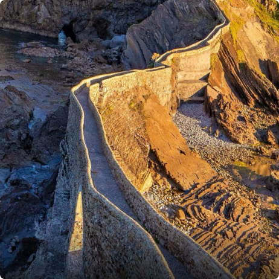
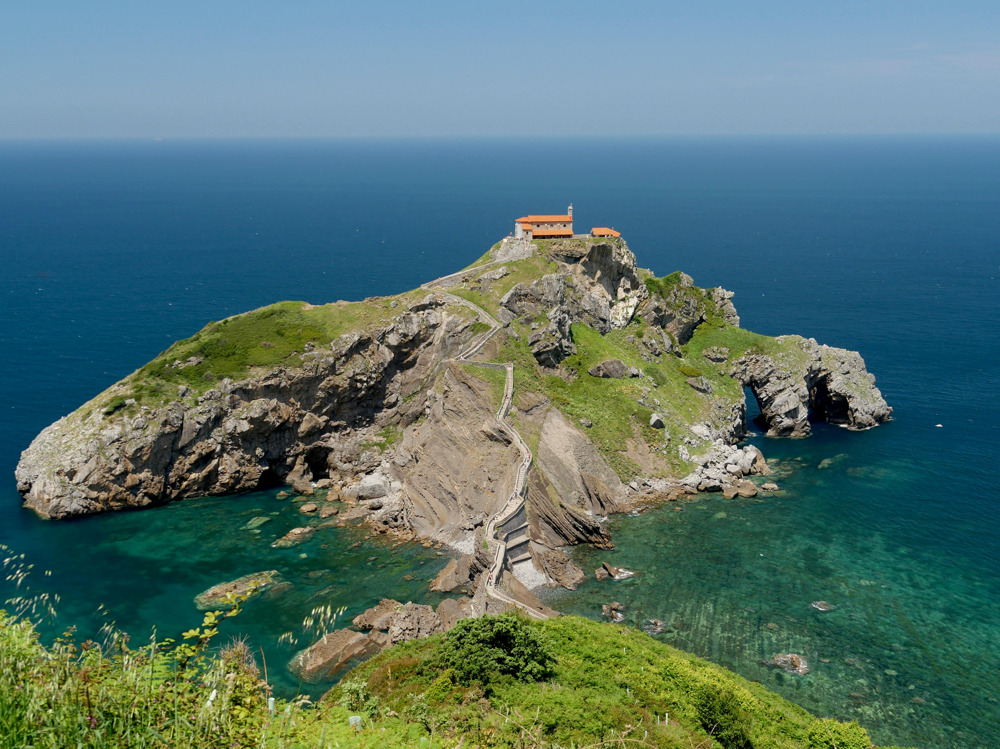
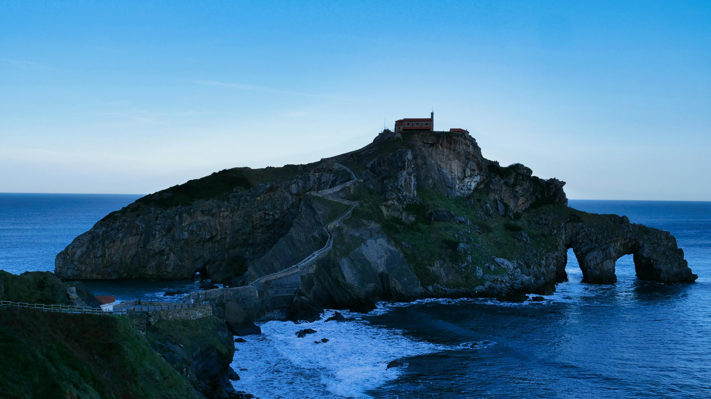
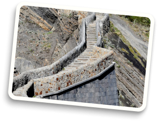
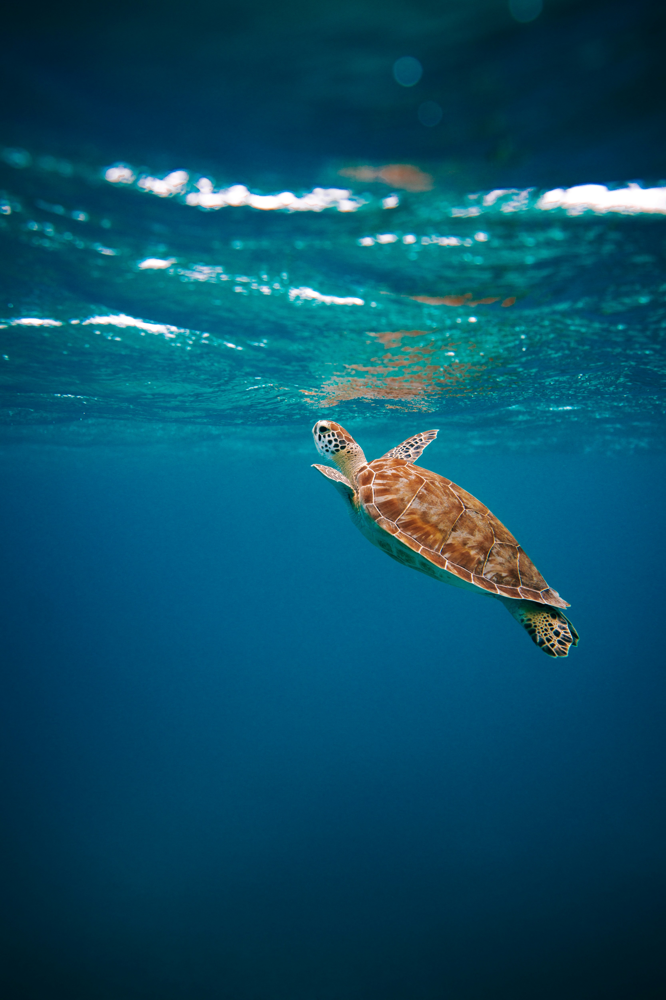

Book Tickets
Stone bridge, five ascending sections, one hermitage at the top. Takes most people about an hour.
View More
Where stone meets the Atlantic.
Rising from the sea, shaped by wind, salt, and centuries.
Rising from the Atlantic, San Juan de Gaztelugatxe offers a journey shaped by stone, sea, and centuries of legend. From coastal viewpoints to the summit hermitage, each location reveals a different side of this iconic island.


The earliest known written reference to the island appears in 1053, documenting its connection to nearby monasteries and confirming its religious significance in medieval Spain.

In the 14th century, the island served as a stronghold for the Lords of Biscay. Seven knights defended it for over a month, using the narrow 241 steps as a natural defense.
TIn the late 16th century, the island was raided by Sir Francis Drake and Huguenot privateers. The attack led to the strengthening of the chapel and its defenses.

A fire in 1978 destroyed the hermitage, but it was rebuilt and reopened in 1980, preserving its enduring legacy.

As a Protected Biotope, the site balances conservation and tourism through visitor limits and structural protection, while local traditions—such as ringing the bell for luck—still endure.

Watch the coastal cliffs burst into vibrant green as wildflowers bloom along the path. Nesting seabirds return to the jagged rocks, and the mild air makes for a perfect, refreshing hike.


Experience the hermitage under brilliant sun and calm, turquoise waters. Long days provide the best light for photography, though the 241 steps are best climbed during the cooler, glowing magic hour.

As the crowds thin, a dramatic golden hue settles over the Bay of Biscay. Crisp winds and churning waves create a powerful, atmospheric setting that highlights the island’s raw, ancient beauty.

Witness the true power of the Atlantic as white-capped waves crash against the stone arches. The misty, quiet trails offer a meditative escape for those seeking the island’s most authentic, rugged soul.

Visitor’s Checklist
Visitor’s Checklist
Ensure you have sturdy walking shoes for the 241-step ascent. The path is steep and uneven,
so take your time to soak in
the breathtaking views of the rugged coastline.
Making a Wish
Tradition dictates that once you reach the top, you must ring the chapel bell three times.
This ancient ritual is said
to bring good luck and ward off evil spirits.
Stone bridge, five ascending sections, one hermitage at the top. Takes most people about an hour.
View More
Boat from Bermeo gives the full view: islet rising from the Atlantic, hermitage at its peak.
View More
2 km from Bakio along open clifftops. The island appears slowly — silhouette first, then full detail.
View More
From seabirds and tidal ecosystems to
coastal vegetation
and marine life,
Gaztelugatxe offers a living laboratory for
ecological observation
and sustainable tourism.

As seasons change, thousands of birds pass over Gaztelugatxe, connecting Europe, Africa, and the Atlantic coast. The island serves as a silent witness to global ecological movement.